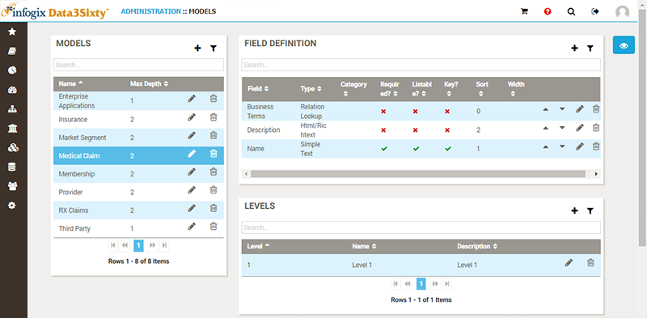
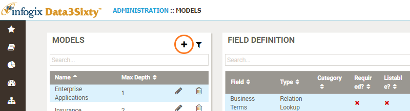
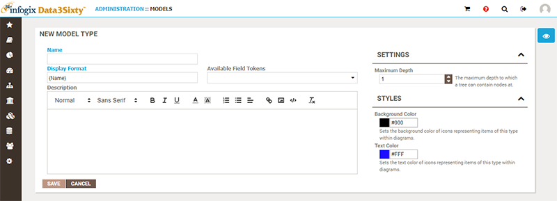
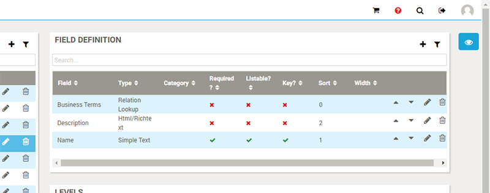
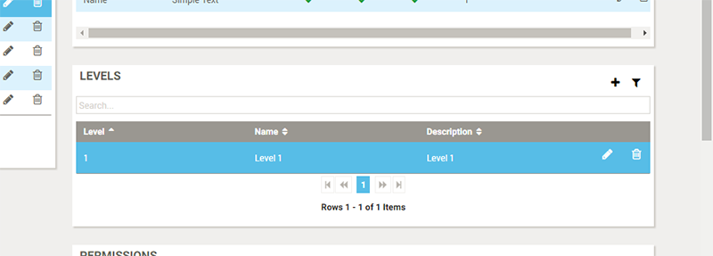

Note: If you are not already familiar with Infogix Data3Sixty models you should first check out the User Guide topics Introduction to assets and Models.
It is the responsibility of the system administrator to define and maintain a set of top-level models, in order to enable Data Steward and Business Owner users to build out hierarchical models for grouping artifacts.
Choose Administration-MetaModel-Models to view a list of existing top-level models, with details for the selected item shown on the right:

You can hit the Add button to create a new top-level model:

The New Model Type panel appears:

Along with name and description, the following Settings are available:
For the selected model, the Field Definition table on the right is available to determine which fields should be displayed and populated for this model, or a child of this model:

Please refer to the following topic Defining fields on asset types, for full details on editing the fields associated with an asset.
For the selected model, the Levels table on the right can be used to optionally provide a name and description for each level of the model:

For details on how to manage permissions of models, please refer to the topic Assigning permissions.
TODO